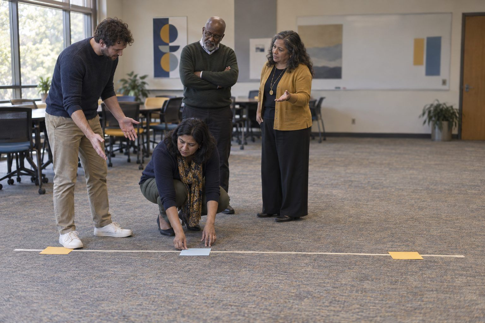

Professional learning · Teachers, Faculty, Coaches, Librarians · 75 minutes
Co-Creation, Not Substitution
Educators sort real classroom and faculty tasks along a human-to-AI spectrum, co-create something with AI while keeping their own thinking visible, and write the disclosure and syllabus statements that make the line clear to students.
The useful question isn't "AI or no AI?" It's "who does which part of the thinking, and does that serve the learning goal?" In this session participants sort classroom and faculty tasks along a spectrum from human-only to AI-assisted to AI-generated with human review, then experience a creative co-creation round where AI widens the options and the human chooses, transforms, and owns the result. They finish by writing a student disclosure statement and a course AI-use statement, with a higher education syllabus variant, so students know exactly where AI belongs in each assignment, if it belongs at all.
In this packet
- Handout A: Collaboration Spectrum Sort (card sort)
- Handout B: Co-Creation Log and Disclosure Builder (worksheet)
- Handout C: Model AI-Use Statements: K–12 and Higher Ed (reading)
- Facilitator key (last page)
TCEA ELE indicators
- AI5.1 I know how to foster collaboration between humans and AI systems.
- AI5.3 I am aware of the potential of AI to augment human creativity and problem-solving.
- AI5.2 I can use AI as a tool for innovation in educational projects and research.
- AI2.3 I am aware of the importance of transparency and accountability in AI systems.
Full facilitator guide: mglearn.github.io/eles/activities/co-creation-not-substitution.html
Handout A for Co-Creation, Not Substitution
Collaboration Spectrum Sort
Sort each task by who should do the thinking, given the learning goal in parentheses. The key shows one defensible placement; a different goal can move a strip.
Human only
AI-assisted (human leads)
AI-generated (human reviews)
Handout A for Co-Creation, Not Substitution
Collaboration Spectrum Sort: cards to sort
Cut apart the strips. Sort each one onto the mat and be ready to explain why.
Sheet 1 of 2
A 9th grader's personal narrative about a family tradition (goal: develop the student's own voice).
A 7th grader brainstorms 15 possible science fair questions with AI, then picks one and explains why it's testable (goal: formulate a testable question).
A teacher generates 30 practice problems on two-step equations, then checks every answer before use (goal: more practice for students).
A final grade on a student's research paper (goal: fair, accountable evaluation).
A teacher asks AI to draft rubric-based feedback on a de-identified essay, then rewrites it before a student sees it (goal: faster, specific feedback).
An 11th grader uses AI to argue against her own thesis so she can strengthen her rebuttal (goal: anticipate counterarguments).
A student in grade 8 writes a poem, then asks AI to suggest three places where the rhythm stumbles, and decides which to change (goal: revise for sound).
A professor drafts alt text for 40 lecture slide images with AI and corrects each description (goal: accessible course materials).
A professor writes the central argument and methods of a grant proposal (goal: the scholar's original contribution).
A graduate student asks AI to suggest search terms for a literature review, then runs searches in library databases and reads the sources (goal: thorough search).
A department drafts a first version of a family newsletter translation with AI, then a fluent staff member revises it (goal: timely family communication).
First-year college students write an in-class reflection on how their thinking changed this semester (goal: metacognition).
Handout A for Co-Creation, Not Substitution
Collaboration Spectrum Sort: cards to sort
Cut apart the strips. Sort each one onto the mat and be ready to explain why.
Sheet 2 of 2
A teacher asks AI for five scenarios for an ethics discussion, keeps two, and rewrites them for her community (goal: engaging discussion prompts).
A student uses AI to write a lab report conclusion and submits it unchanged (goal: reason from evidence).
Handout B for Co-Creation, Not Substitution
Co-Creation Log and Disclosure Builder
Part 1 logs your co-creation round. Part 2 drafts the statements you'll use with students.
Part 1. What I asked the AI to do (my exact prompt):
Ideas I rejected, and why (at least six):
How I combined, twisted, or localized an idea. The part that is unmistakably mine:
Part 2. Student disclosure template for one assignment (what students will fill in: tool, what I asked, what I kept/changed/rejected, how I checked):
My AI-use statement for this assignment or course: the level, why it fits the learning goal, what students must disclose, and what to do when unsure.
Colleague check: "A student reading this would know that…" and "One thing still unclear is…"
Handout C for Co-Creation, Not Substitution
Model AI-Use Statements: K–12 and Higher Ed
Adapt, don't adopt. Align with your district's or institution's policy, and fill the blanks for your own course.
1Student disclosure (grades 6–12). "For this assignment I used an AI chatbot approved by my school to ______. I kept ______. I changed or rejected ______ because ______. I checked the AI's information by ______. Everything else in this work is my own thinking and writing."
2Classroom AI-use statement (K–12 teacher, assignment level). "In this class, AI use is decided assignment by assignment, based on what you're learning. Every assignment is marked with one of three levels. Level 0, No AI: the thinking and writing are the skill we're practicing, so they must be yours. Level 1, AI as helper: you may use the school's approved AI tool to brainstorm, get feedback, or check understanding, but the final work must be written by you, and you'll complete a disclosure. Level 2, AI as partner: using AI is part of the task, and you'll show what you asked, what you changed, and how you checked it. If you're not sure what's allowed, ask me before you start. Asking is always okay."
3Higher Ed syllabus AI-use statement (course level). "Generative AI in ______ (course number and title). This course treats generative AI as a tool that can support learning in some tasks and undermine it in others. Each assignment in the syllabus is labeled with one of three levels. No AI: assignments that assess your independent reasoning, writing, or recall; using generative AI in any part of these assignments is not permitted. Limited AI: you may use institution-approved AI tools for brainstorming, outlining, or feedback on your own draft, but not to generate text you submit; include a brief disclosure statement. Integrated AI: AI use is part of the assignment design; document your prompts, what you accepted and rejected, and how you verified outputs."
4Higher Ed syllabus, continued. "In all cases, you are responsible for the accuracy of everything you submit, including any AI-assisted content; AI tools can produce plausible but false information and citations. Do not enter other people's personal information, or unpublished work that isn't yours, into AI tools. Undisclosed use where AI is not permitted will be handled under the institution's academic integrity policy, based on evidence from your work and process, not AI-detection software alone. If you're unsure whether a use is permitted, ask before you submit; that question will never count against you."
5Why these statements work. They tie AI use to learning goals rather than a single blanket rule; they name permitted uses, not only prohibitions; they ask for specific disclosure (what, how, what changed, how checked); they place responsibility for accuracy on the author; and they offer a safe way to ask.
Facilitator only for Co-Creation, Not Substitution
Answer key and notes
Handout A: Collaboration Spectrum Sort
| Item | Sort | Why |
|---|---|---|
| A 9th grader's personal narrative about a family tradition (goal: develop the student's own voice). | Human only | The voice is the learning; AI drafting would replace it. |
| A 7th grader brainstorms 15 possible science fair questions with AI, then picks one and explains why it's testable (goal: formulate a testable question). | AI-assisted (human leads) | AI widens options; the student does the judging and justifying. |
| A teacher generates 30 practice problems on two-step equations, then checks every answer before use (goal: more practice for students). | AI-generated (human reviews) | The learning is students solving, not the teacher writing items; review catches errors. |
| A final grade on a student's research paper (goal: fair, accountable evaluation). | Human only | A consequential judgment about a student needs a human decision-maker. |
| A teacher asks AI to draft rubric-based feedback on a de-identified essay, then rewrites it before a student sees it (goal: faster, specific feedback). | AI-assisted (human leads) | AI drafts; the teacher's knowledge of the student shapes the final feedback. |
| An 11th grader uses AI to argue against her own thesis so she can strengthen her rebuttal (goal: anticipate counterarguments). | AI-assisted (human leads) | AI as sparring partner; the student still builds the argument. |
| A student in grade 8 writes a poem, then asks AI to suggest three places where the rhythm stumbles, and decides which to change (goal: revise for sound). | AI-assisted (human leads) | The poem and the decisions stay the student's. |
| A professor drafts alt text for 40 lecture slide images with AI and corrects each description (goal: accessible course materials). | AI-generated (human reviews) | Access is the goal; expert review ensures accuracy. |
| A professor writes the central argument and methods of a grant proposal (goal: the scholar's original contribution). | Human only | The intellectual contribution is the point and carries the author's accountability. |
| A graduate student asks AI to suggest search terms for a literature review, then runs searches in library databases and reads the sources (goal: thorough search). | AI-assisted (human leads) | AI suggests; the student verifies and reads real sources. |
| A department drafts a first version of a family newsletter translation with AI, then a fluent staff member revises it (goal: timely family communication). | AI-generated (human reviews) | Useful speed, but a fluent human must check meaning and tone. |
| First-year college students write an in-class reflection on how their thinking changed this semester (goal: metacognition). | Human only | Reflection on one's own thinking can't be outsourced. |
| A teacher asks AI for five scenarios for an ethics discussion, keeps two, and rewrites them for her community (goal: engaging discussion prompts). | AI-generated (human reviews) | AI generates options; the teacher selects and localizes. |
| A student uses AI to write a lab report conclusion and submits it unchanged (goal: reason from evidence). | Human only | The reasoning is the learning; as described, this is substitution, not collaboration. |